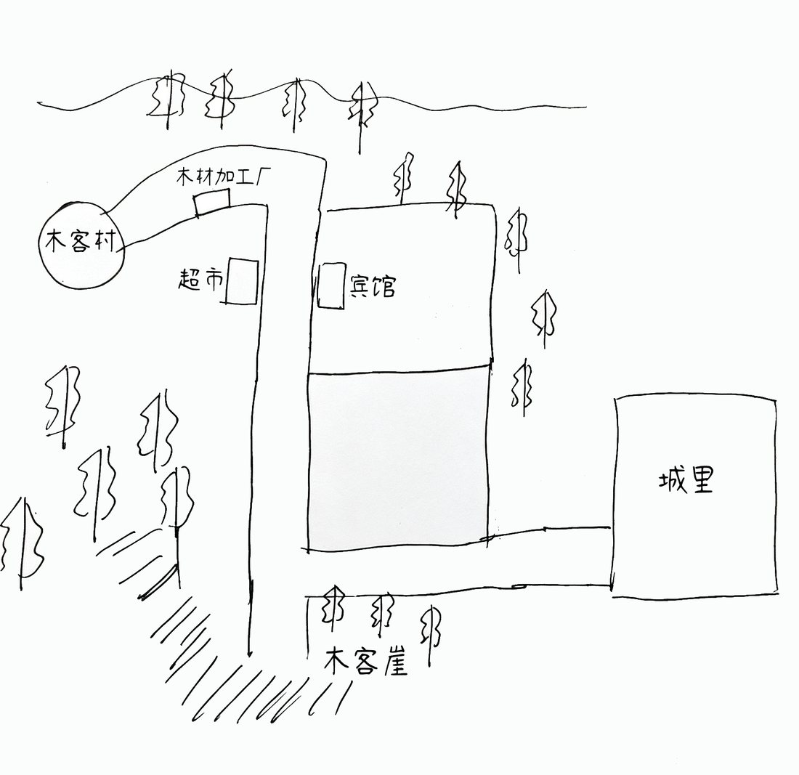
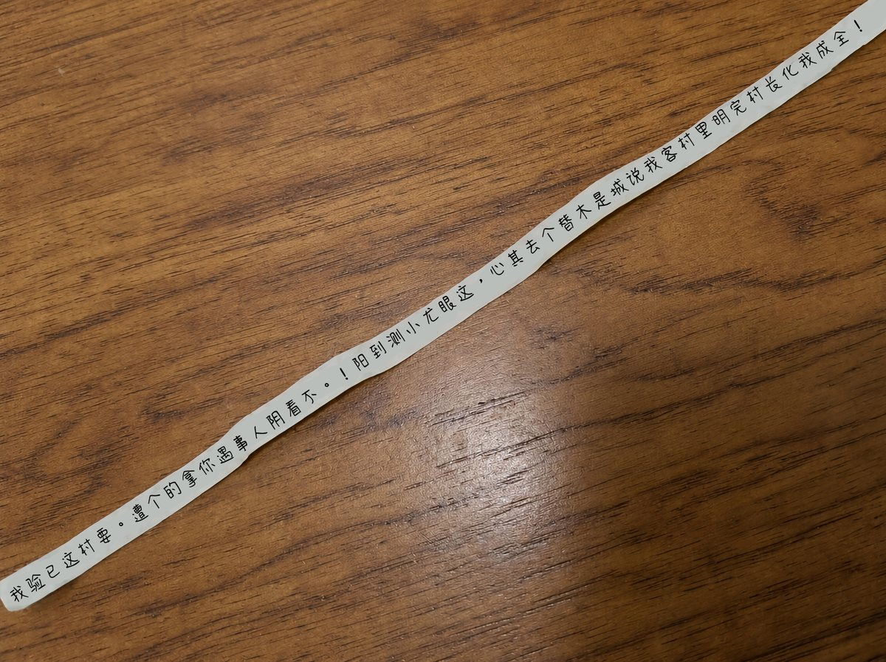
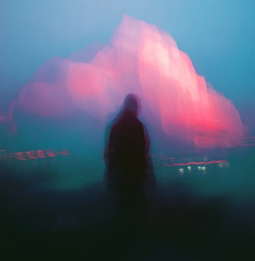

大家圣诞节快乐！没想到都到了知命之年，还洋气了一把，跟学生们一起在学校过了个热闹的圣诞节！
如今这个年代很多地方都没有故事了，这对我们研究民俗的学者来说不是个好事，没有好的素材，怎么发顶刊？
还好我前阵子从图书馆翻出一些老资料，发现了木客村这个古老的村庄。
它位于边境地区一个非常偏远的地方。我在网上简单搜了一下，据说今年特别火的"神清药厂"里的一种原料，就是从那边的一种蘑菇提取的。
虽然神清药厂辟谣了，但网友们认为药厂这是怕自己的独家成分被窃取。
我对这个劳什子聪明药不感兴趣，平时也劝学生们别吃，学业上的"捷径"只会成为人生道路上最长的弯路。
我感兴趣的是这个村子里的一种特殊民俗仪式。
资料显示，木客村一直都有拜鬼的习俗。
木客村全村的人都信奉鬼的力量，认为鬼的力量足够强大，能满足他们所有的愿望。
这在连"4"都是忌讳的中国是非常罕见的。
我有一种预感，如果能去木客村进行田野调查，一定能写出一篇不错的论文。
就在我苦于缺乏经费时，一个叫银星学会的民间机构联系到我，表示愿意赞助我的田野调查。
当然是有条件的。
据说木客村的村长收藏了一个陨石，而银星学会热衷于研究世界各地的陨石，因此它希望我去木客村时，顺便搜集这块陨石的详细情况。
我搜了一下，发现是在有关部门注册过的正规机构，我怕过了这个村就没这个店了，于是果断应下来了。
银星学会还送了我一个笔记本，封面印着摩羯座，这个学会太细心了，还知道我的星座。
据说木客村严禁拍照，看来我需要招募一个会速写的学生充当照相机，最好是美院的学生，够专业。
请输入教授8位数的出生日期
我很快就招到了一个美院的男学生跟我一起去木客村。
我看过他的画，写实风格非常写实，有他在，不能拍照我也放心了。
飞机落地那个省会城市，高铁坐到边境那个市，大巴坐到乡镇附近，最后打车到了木客镇唯一一家宾馆。
而木客村还要走一个小时的下坡路才能到。
所以我们打算今天先在芳芳宾馆歇脚，明天再战。
就算休息了一晚上，舟车劳顿的疲惫也还是没能消失，不服老不行啊。
离开小镇的路上，信号渐渐消失。
看来每天只能等回到宾馆再发布博客了。
随着离木客镇越来越远。我看向附近郁郁葱葱的山林，深感大自然的神秘。
我让小顾同学帮我拍了一张背影照，当作我的博客头像，算是纪念吧。
终于回到宾馆了。
今天发生了很多事。
在去木客村的路上，我们途经了一个小型的木材加工厂，附近地上散落了很多木棍。
我捡起一根，木棍直径大概一公分粗，当拐棍还挺趁手。
没有任何一个男人能抵抗这么直的棍子。
我捡起另一根塞到小顾同学手里，他嘴角起码上扬了三个像素点，我就说吧，没有任何一个男人能抵抗这么直的棍子。
走了一个小时的路，终于来到这条很缓的下坡路的尽头，抵达了木客村。
小顾同学方向感真强，我把他画的地图拍下来了，有了地图，这几天肯定不会迷路了

村子不大，只有几十户人家，有一种再过几年就会消亡的苍凉。
村长方田招待的我们。方村长看着有六十岁了，身子骨还算硬朗。
他跟我们强调了一些村子的规矩。不准拍照，不准带走任何东西，不准留下任何东西。我一一答应下来。
村长介绍的村子民俗跟我在资料里看到的一样，木客村全村都信奉鬼的力量，家家户户都会拜鬼，求鬼保佑。
我跟小顾同学走访了几家村民，发现他们挨家挨户堂屋中间都供奉着一个竖眼睛的泥塑。
村长说这个眼睛寓意是阴阳眼，是人鬼沟通的渠道。
我提出想近距离观察，被村长严肃地拒绝。他说泥塑落地后，严禁任何人触碰，最好连靠近都不要靠近，否则会惊扰到鬼。
"去年冬天有个游客偷拿它，想带回家。这就相当于把那户人家供奉的鬼带在了身旁。结果那个人因此被鬼缠身，都没能回到家，在回家的路上就从木客崖掉下去摔死了。"
我不太相信这些怪力乱神，村长似乎看出了我的怀疑，有点生气地说，"不信可以去查新闻，那个人名字叫李希！"
我向村长保证会遵守规定，村长脸色才缓和过来。
村长看到我跟小顾同学手里的木棍，主动向我们介绍。原来这边种了不少榉树，去镇子的路上有一个小型的木材加工厂，那里会把榉木加工成一公分粗的木棍，运到城里售卖。这些木棍在网上销量挺不错的，所以村民都爱种榉树谋生。
我们在村子里参观了很久。
村子虽然不大，但我要求小顾同学尽可能详细地描绘这个村子的情况，因此每到一个新的地方，我们就会耽搁一段时间。
经过了一户村民家，村长说这家人叫方勇，在镇上开出租车的，有需要可以联系他。
另一户村民叫方芳，就是我们住的芳芳宾馆的老板，平时住在宾馆不回村。
院子是用榉木做的围栏围起来的，门也是木头的，看起来完全不防盗。
这种家家户户都认识的小村子，完全可以做到夜不闭户。
时间很快来到中午，村长邀请我们吃午饭，却之不恭。
在堂屋吃饭时，供台上的阴阳眼就这样俯视着我们，看得我心里发怵。
回到宾馆后，我搜了去年关于李希的新闻。
又是神清药厂的聪明药……难道这个药真的有问题？
我在其中一篇新闻中找到了李希妻子的联系方式。那篇新闻发布时警方还没找到李希尸体，所以留下李希的妻子王笙的联系方式，希望找到线索的人联系她。
我搜这个手机号添加了微信，果然是王笙。
我告诉她我现在在木客镇，听说了去年李希坠崖的事，觉得事情有蹊跷，所以想了解一下那件事的详情。
王笙简述了那件事，跟新闻没太多出入，但她提到一个警方没有公开的事。
王笙说，李希在缝在衣服内侧的袋子里藏了一张纸条，但上面写的东西完全读不通。
警方搜查到后，以为是用她能看懂的方式写的遗书，就交给了她。但她也看不懂。
再加上警方认定他是失足坠落悬崖，她就没有再思考纸条的内容。
她发来这张纸条的图片，然后就去休息了。

我验已这村要。遭个的拿你遇事人阴看不。！阳到测小尤眼这，心其去个替木是城说我客村里明完村长化我成全！
我看着这条纸条陷入沉思。
白天当作拐棍的木棍被我攥紧一下一下戳着地面。
我心情一紧张就容易有这种小动作。
突然间，我一下子明白了如何看懂了这张纸条上的内容。
看懂他死前留言的那一刻，我汗毛倒竖。
白天在村子里感受到的异常果然不是我多想，木客村藏了大阴谋！
李希是为了查证聪明药才去的木客村，而他偷走阴阳眼泥塑去化验，就说明这个泥塑跟聪明药有大关系。
要是这药真有问题，这得害了多少学生啊！
我必须得管这个事！
我决定偷偷拿走一个阴阳眼泥塑一探究竟。
今天我又带上小顾同学去了木客村。
这次是询问陨石的事。
村长说他家里确实收藏了一小块陨石。
之前文旅局还来采访过，得到文旅局的允许后，陨石就继续放他家收藏了。
我让小顾同学把它临摹下来，等回去之后也好给银星学会一个交代。
我特地让小顾临摹得仔细一点，而不只是画个草图。
中途我借口去厕所离开了，留小顾同学和村长在放陨石的房间待着。
我从村长家出来后赶紧来到昨天经过的方芳家。
我今天离开宾馆时，确定她留在了宾馆，此刻她肯定不在家。
村子里人烟稀少，此刻快到饭点了，路上没什么人。
我从后院栅栏翻过去，发现堂屋的窗户虚掩着。
我翻进堂屋，看到中间供奉的阴阳眼泥塑。我悄悄把它拿下来塞进背包里，原路返回。
回到村长家，小顾同学还在画陨石。我打断了他，说画到这个程度就够了。
我尽量不动声色地打听李希坠崖的事。
村长再次强调说李希偷拿了村子里供奉的阴阳眼，受到了鬼的惩罚。
我想到此刻包里的泥塑，有点尴尬。
村长又留下我们吃饭，而我只想跟小顾赶紧回宾馆。
村长继续劝我们留下来，“方勇你们知道吧？当年就是他载李希去的木客崖。他昨晚跟我说了今天会来吃午饭，你可以问他当时那个事的细节。”
我听到这话，决定留下来吃午饭。
村长说去年那个叫李希的人非常没礼貌，在村子里东瞧瞧西看看，好奇心特别重。
“我提醒他好几次，不要带走木客村的任何东西，否则会把灾祸引上身。他满口答应，我也不能一直盯着他，就随他去了。
“后来的事你们能搜到，第二天他就从木客崖上摔下去了。
“警察在他的背包里找到一个阴阳眼泥塑，我才知道原来他那天偷拿了一个我们供奉在路边的泥塑，搞得我们后来都不敢把泥塑放屋外头了。”
他跟我们寒暄了一通，说有需要用车的地方尽管跟他联系。
我感谢了他，把方勇的联系方式记在了手机备忘录上，还好备忘录没网也能用。
吃完饭后，我们聊了聊去年发生的事。
“他原本让我带他去城里的，结果在车上跟我聊了他家的事，说孩子没了，心情很低落，让我带他去木客崖，他要散散心，我把他放到那边就走了。
“后来听说他媳妇儿一直没联系上他，急得报警了。警察来这边寻人，我一看这不就是那天要去木客崖的人吗？就跟警察说了。
“警察从木客村那边绕过去走到崖底，发现了那个人的尸体，摔得老惨了……”
聊得差不多了，他开出租车去城里，顺便把我跟小顾同学也捎上了。
一个小时的脚程，油门一踩就花了不到二十分钟。
我想跟他约个明天的时间，拜托他送我进城，今天再去城里找化验所有点晚了。
但是我不想把小顾同学卷进去，于是在车上就没提。
回到宾馆后不久，我用手机搜索到了城里一个化验所的地址。
我给方勇发了短信，约了明天上午十点，让他送我去城里的化验所。
我告诉小顾，让他明天不要乱跑，我去城里忙点事，等我回来我们就返校。
吃完晚饭，我把阴阳眼的泥塑拿出来，仔细端详。
泥塑的表面非常粗糙，村民制作它的时候看起来非常不用心。
他们不是非常信奉鬼的力量吗？为什么这个泥塑做得这么粗糙？
我一边摩挲一边仔细观察这个泥塑，想找到更多奥秘。
我是不是应该先把它剖开，提前检查一下比较好？
村长看着挺老实，他有什么秘密隐瞒着大家？
其他村民也有秘密吗？
正当我仔细观察这个泥塑时，我的余光瞥到靠在一旁的木棍似乎动了一下。
我定睛看去，发现了诡异的一幕。
一觉醒来，昨晚看到的东西全部都不见了。
我躺在地上，渐渐明白了事情的真相。我挣扎着爬起来，发现已经九点多了。
我赶紧洗漱，将泥塑包好放进背包。隔壁小顾的房间很安静，他可能还没起床，于是我没跟他打招呼。
估计今天没时间再发博客了，所以今天的博客就先写到这里吧，明天有了新的进展再更新。
转眼间快到十点了，我要去一楼大堂等方勇带我去城里的化验所。
等明天结果出来，一切都会真相大白。
最新评论（1）
